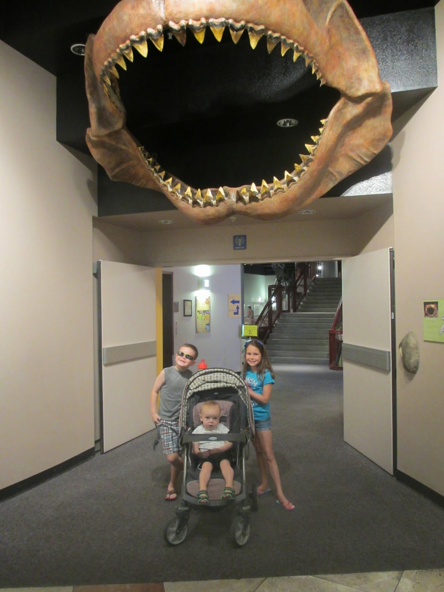
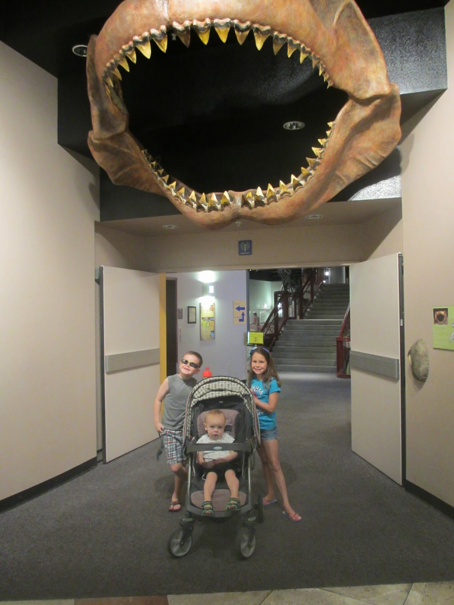
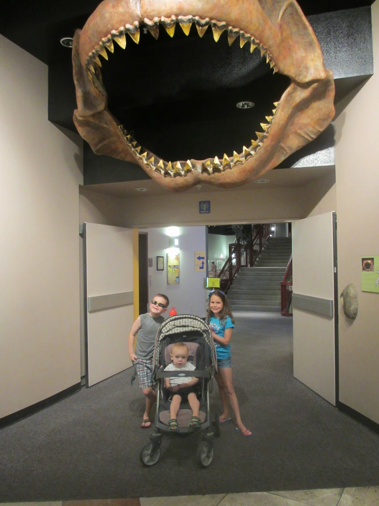
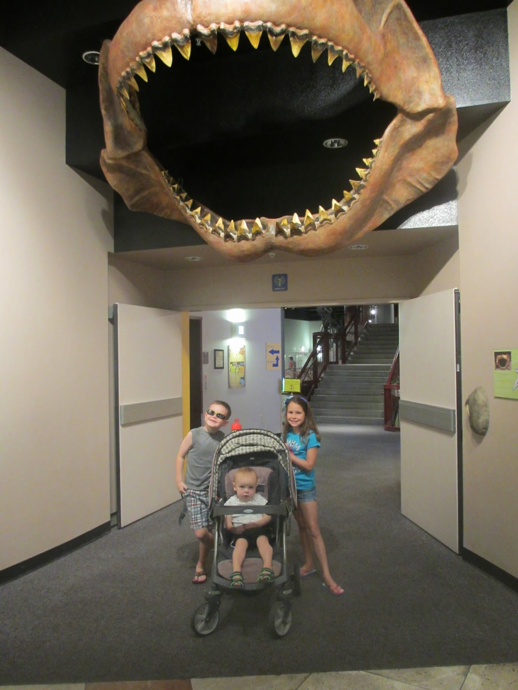

Discover the vibrant city of Mesa, Arizona, where captivating adventures and endless possibilities await you. Nestled in the heart of the Sonoran Desert, Mesa offers a unique blend of natural beauty, cultural heritage, and modern amenities. Immerse yourself in the breathtaking landscapes as you hike through Usery Mountain Regional Park or explore the stunning rock formations of the Superstition Mountains. With over 300 days of sunshine per year, Mesa is the ultimate destination for outdoor enthusiasts, boasting world-class golf courses and a multitude of recreational activities. Experience the rich history and cultural tapestry of Mesa as you step into the past at the Mesa Grande Ruins or wander through the exhibits at the Mesa Arts Center. Delve into the southwestern charm as you stroll along the charming streets of downtown Mesa, lined with vibrant art galleries, boutique shops, and delectable dining options. Don't miss the chance to immerse yourself in the local heritage at the Mesa Historical Museum, where fascinating exhibits narrate the city's journey from its early Native American roots to the present day. Mesa is a true haven for food lovers, offering a diverse culinary scene that caters to all tastes. From farm-to-table eateries serving fresh, locally sourced ingredients to international flavors and trendy gastropubs, Mesa's dining options are sure to tantalize your taste buds. Savor mouthwatering Mexican dishes, indulge in succulent barbecue, or treat yourself to delectable desserts at one of the many celebrated restaurants. In addition, Mesa is home to numerous craft breweries and wineries, where you can sip on handcrafted beverages while enjoying the lively atmosphere. Come and experience the allure of Mesa, Arizona, where natural wonders, cultural treasures, and culinary delights seamlessly blend together. Whether you seek outdoor adventures, cultural immersion, or a gastronomic journey, Mesa has something to offer every traveler. Plan your visit today and unlock unforgettable memories in this vibrant desert oasis.